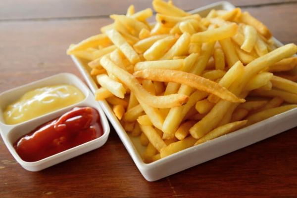

Papas Fritas clasicas

el clasico plato de papas fritas
esta es una receta muy sencilla y conocida.
Son papas fritas crocantes y saladas.
Ingredientes
- papas
- sal
- aceite
- aderezos a preferencia
Pasos
- pelas las papas
- lavarlas bien
- cortarlas a todas iguales
- dejarlas reposar en agua durante un rato
- por ultimo secarlas y freirlas en aceite hirviendo